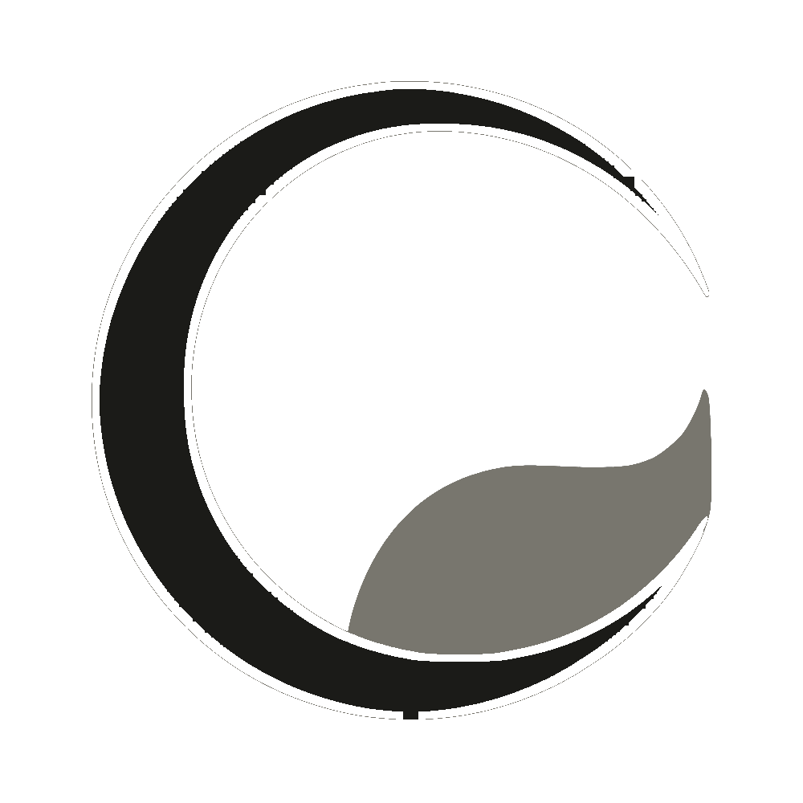

Un sistema cálido para acompañar el crecimiento.
Este es el lenguaje visual de Crecer Psicología: el conjunto de colores, tipografías, componentes y reglas que mantienen cada pieza —web, redes y material clínico— coherente, cercana y profesional.
Crecimiento
Toda la marca gira en torno a la idea de crecer: orgánica, viva, en proceso.
Calidez
Cremas y verdes naturales. Nunca frío ni clínico: un espacio que contiene.
Confianza
Tipografía clara y jerarquía definida. Profesionalismo que tranquiliza.
Logo
La marca es una C en verde bosque que abraza una hoja —la semilla que crece—. El trazo arena marca el nervio de la hoja. Es orgánico, sereno y reconocible a cualquier escala.
Versiones aprobadas
Usá la versión con mayor contraste sobre cada fondo. Mantené siempre el área de protección.
Lockup con wordmark
El isotipo acompañado del nombre. Playfair Display para “Crecer Psicología”, Lato en mayúsculas espaciadas para la bajada.
Versión monocromática (B&N)
A un solo color la hoja se fundiría con la C. La separamos con un filete (outline) para que se distinga a cualquier tamaño — es la versión oficial.

Alternativa con la hoja en tono diferenciado (sombra) en vez de filete. Se descartó: el filete se lee mejor a tamaños chicos (favicon, sellos).Usos correctos e incorrectos
Color
Una paleta orgánica de verdes y tonos tierra. Cálida, natural, nunca sintética. Hacé clic en cualquier muestra para copiar el código hex.
Paleta
Combinaciones recomendadas
Pares de fondo + texto con contraste suficiente para titulares y cuerpo.
Estados semánticos
Variantes dentro del mundo cálido para feedback de interfaz.
Tipografía
Playfair Display aporta el carácter editorial y humano de los titulares; Lato sostiene el cuerpo con claridad y calidez. Dos familias, jerarquía clara.
Espaciado & forma
Una escala de 4 pt da ritmo y aire —clave para el tono sereno—. Los radios y sombras se adaptan a cada dirección visual.
Editorial usa esquinas casi rectas; Cálida, formas muy redondeadas.
Iconografía
Íconos de trazo fino (1.6 px), redondeados y orgánicos. Acompañan, nunca compiten. Verde bosque sobre fondos claros; blanco cálido sobre verde.
Botones
La acción principal siempre en verde bosque. Probá los estados: hover, foco, carga y deshabilitado son reales.
Formularios
Campos claros, validación cálida y sin alarmas. Este formulario valida de verdad —probá enviarlo vacío o con un email inválido.
Cards
Tres tipos: especialidad (con ícono), equipo (con foto) y testimonio (sobre verde). Pasá el cursor para ver la elevación.
Especialidades
Ansiedad y estrés
Acompañamos procesos de preocupación excesiva, tensión emocional y ataques de pánico.
Vínculos y relaciones
Exploramos patrones que se repiten en pareja, familia y entorno para construir vínculos más sanos.
Autoestima y desarrollo
Trabajamos la relación con uno mismo, el autoconocimiento y el crecimiento personal.
Equipo
Lic. Ana Gómez
Lic. Diego Pérez
Lic. Sofía Ruiz
Testimonios
Encontré un espacio donde sentirme escuchada sin juicio. Aprendí herramientas que uso todos los días.
Como pareja, pudimos volver a hablarnos. El acompañamiento fue cálido y profesional de principio a fin.
Badges & etiquetas
Señales pequeñas para estados, categorías y filtros. Usalas con moderación.
Acordeón
Para preguntas frecuentes. Un panel abierto a la vez; animación suave. Probá abrirlos.
Citas & bloques destacados
Momentos de respiro y énfasis dentro de una página. Para frases de marca, citas de autor y llamados a la acción.
“Hasta que lo inconsciente no se haga consciente, seguirá dirigiendo tu vida y tú lo llamarás destino.”
Carl JungCoordiná tu primera consulta
Dejanos tus datos y nos contactamos con vos para coordinar un horario.
Header & footer
La navegación del sitio. En pantallas chicas el menú colapsa en hamburguesa.
Voz & tono
Hablamos en segunda persona (vos), cálido y validador, sin tecnicismos. Profesionales pero cercanos: acompañamos, no diagnosticamos a la distancia.
Cercano y validador, sin tecnicismos.
Aire, ritmo calmado, sin urgencia.
Claridad y consistencia en todo canal.
“Te acompañamos para encontrar nuevas formas de pensar, sentir y actuar.”
“Tratamiento de trastornos psicopatológicos mediante abordaje clínico.”
Aplicaciones
El sistema en contexto: una pieza para redes y un hero web. Todo se reviste con la dirección visual activa.
Crecer Psicología · Design System 2026 — referencia viva · exportable a PDF · base para desarrollo